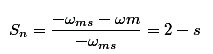
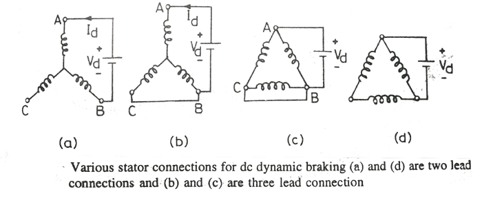
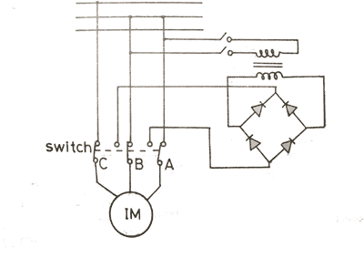

Induction motors are used at various places. Speed control of induction motors is quite difficult and that’s why their use was restricted and DC motors had to be used as their speed regulation was possible. But when induction motor drives were invented and implemented, they were given preference because of many advantages over DC motors. Whenever controlling of motors is done, braking is the most important term, so as with induction motors. Induction motor braking can be done by different methods, which are
i. Regenerative braking of induction motor
ii. plugging Braking of induction motor
iii. Dynamic braking of induction motor is further categorized as
a) AC dynamic breaking
b) Self excited braking using capacitors
c) DC dynamic braking
d) Zero Sequence braking
Regenerative Braking of Induction Motor
We know the power (input) of an induction motor is given as.
Pin = 3VIscosφs
regenerative braking of induction motor
Here, φs the phase angle between stator phase voltage V and the stator phase electric current Is. Now, for motoring operation φs < 90° and for braking operation φs > 90°. When the speed of the motor is more than the synchronous speed, relative speed between the motor conductors and air gap rotating field reverses, as a result the phase angle because greater than 90° and the power flow reverse and thus regenerative braking takes place. The nature of the speed torque curves are shown in the figure beside. It the source frequency is fixed then the regenerative braking of induction motor can only take place if the speed of the motor is greater than synchronous speed, but with a variable frequency source regenerative braking of induction motor can occur for speeds lower than synchronous speed. The main advantage of this kind of braking can be said that the generated power is use fully employed and the main disadvantage of this type of braking is that for fixed frequency sources, braking cannot happen below synchronous speeds.
Plugging Braking of Induction Motor
Plugging induction motor braking is done by reversing the phase sequence of the motor. Plugging braking of induction motor is done by interchanging connections of any two phases of stator with respect of supply terminals. And with that the operation of motoring shifts to plugging braking. During plugging the slip is (2 - s), if the original slip of the running motor is s, then it can be shown in the following way.

Induction Motor Braking
From the figure beside we can see that the torque is not zero at zero speed. That’s why when the motor is needed to be stopped, it should be disconnected from the supply at near zero speed. The motor is connected to rotate in the reverse direction and the torque is not zero at zero or any other speed, and as a result the motor first decelerates to zero and then smoothly accelerates in the opposite direction.
Dynamic Braking of Induction Motor
There are four type of dynamic braking of induction motor or rheostatic braking , we will discuss about then.
AC Dynamic Braking - This type of induction motor braking is obtained when the motor is made to run on a single phase supply by disconnecting any one of the three phase from the source, and it is either left open or it is connected with another phase. When the disconnected phase is left open, it is called two lead connection and when the disconnected phase is connected to another machine phase it is known as three load connection. The braking operation can be understood easily. When the motor is running on 1-phase supply, the motor is fed by positive and negative sequence, net torque produced by the machine at that point of time is sum of torques due to positive and negative sequence voltage. At high resistance the net torque is found to be negative and braking occurs. From the figure below the two and three load connections can be understood.
Induction Motor Drive
Self excited braking using capacitors
Self excited braking of induction motor
The figures above shows the circuit diagram and various characteristics of self excited braking using capacitors. As we can see from the figure, in this method there capacitors are kept permanently connected across the source terminals of the motor. The value of the capacitors are chosen depending upon their capability to deliver enough reactive electric current to excite the motor and make it work as a generator. So, that when the motor terminals are disconnected from the source the motor works as a self excited generator and the produced torque and field is in the opposite direction and the induction motor braking operation occurs. In the figure (b) the curve A represents the no load magnetization curve and line B is the electric current through capacitors, which is given by
Here E is the stator induced voltage per phase
The speed torque characteristics under self excited braking is shown in the figure (c). To increase the braking torque and to utilize the generated energy sometimes external electrical resistance are connected across the stator terminals.
DC Dynamic braking To obtain this type of braking the stator of a running induction motor is connected to a dc supply. Two and three load connections are the two common type of connections for star and delta connected stators.

Another diagram is shown below to illustrate how by diode bridge two load coonection can be obtained within a circuit.

Two loads dc dynamic braking operation
Now coming to the method of operation, the moment when AC supply is disconnected and DC supply is introduced across the terminals of the induction motor, there is a stationery magnetic field generated due to the DC electric current flow and as the rotor of the motor rotates in that field, there is a field induces in the rotor winding, and as a result the machine works as a generator and the generated energy dissipates in the rotor circuit resistance and dynamic braking of induction motor occurs.
Zero sequence braking In this type of braking all the three stator phases are connected in series and single phase ac or dc is connected across them (as shown in the figure). This type of connection is called zero-sequence connection, because electric current in all the stator windings are co-phasal. When the connected supply is ac, resultant field is stationery in space and pulsates at the frequency of supply, when the supply is dc, resultant field is stationery and is of constant magnitude. The main advantage of this induction motor braking is that all the stator phases are uniformly loaded. It does not require large rotor resistance like ac dynamic braking, it does not require large rotor resistance. The circuit diagram and the speed torque characteristics are shown below.
Zero Sequence Braking
The above discussion easily describes the concept of induction motor breaking.
 by
by {kind=link}
{kind=link}
{kind=link}